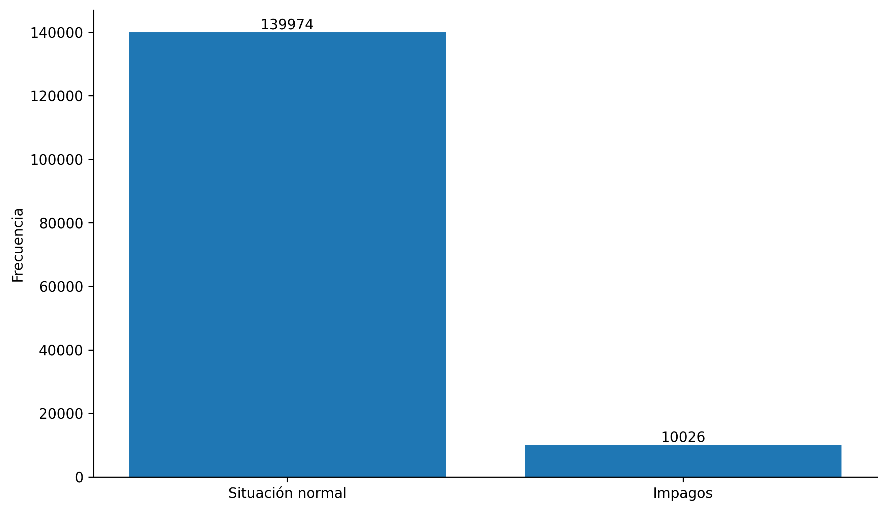
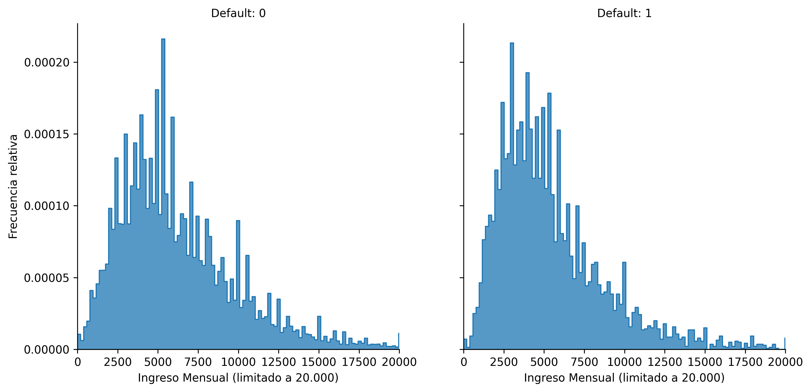
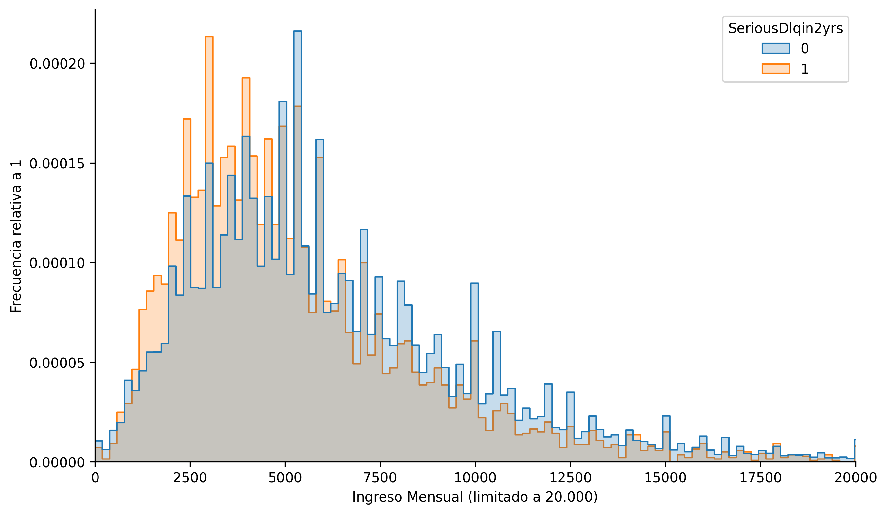
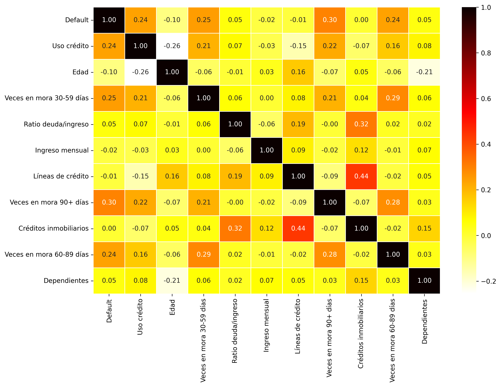
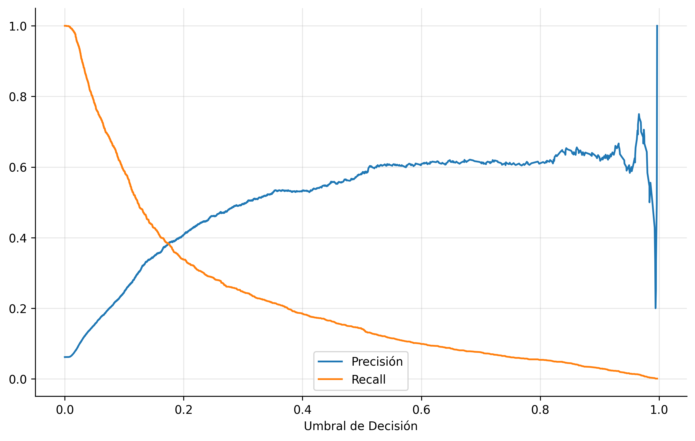
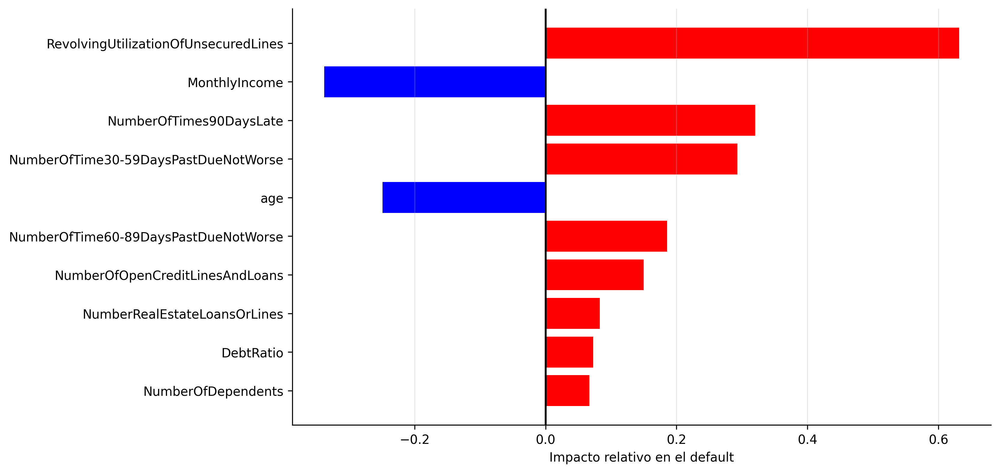
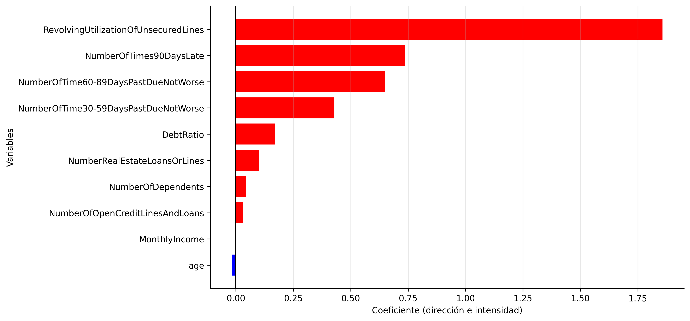
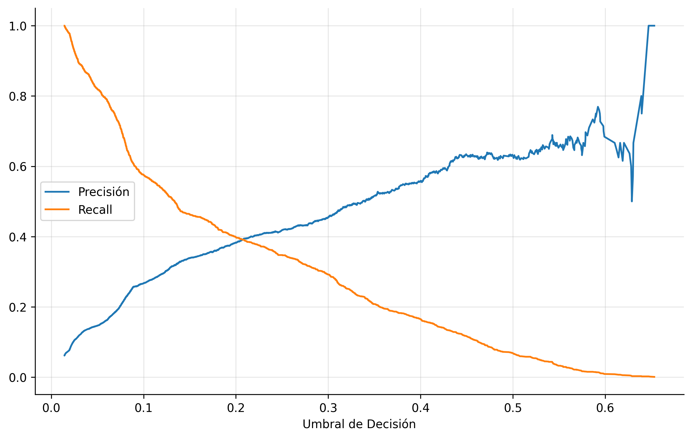
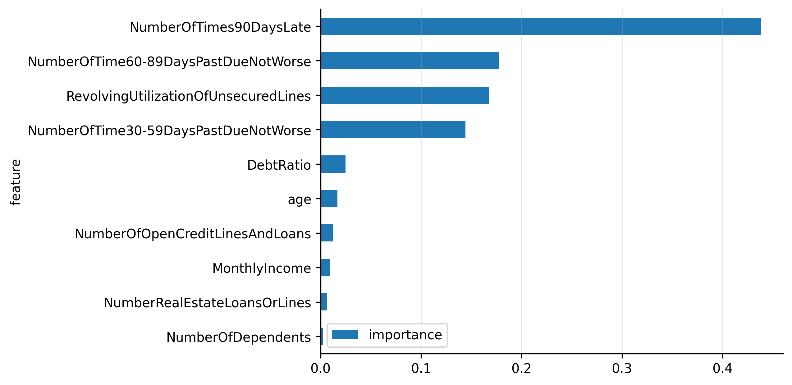
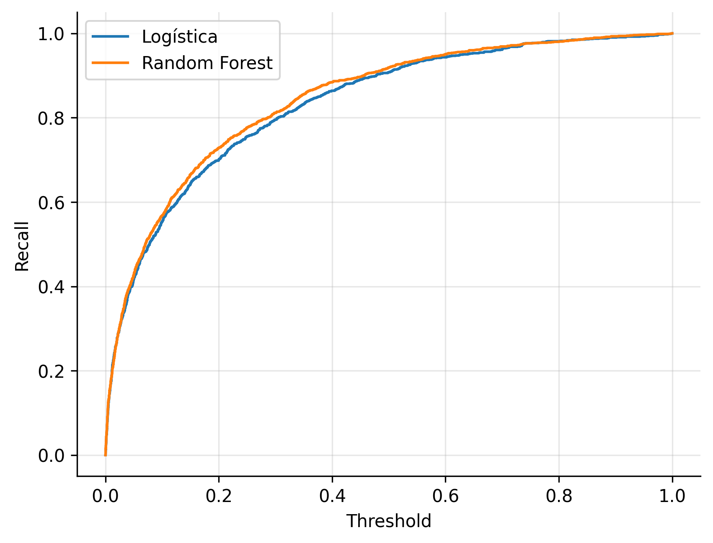

Introducción
El objetivo de este análisis es entender qué características separan a un "buen pagador" de uno con "riesgo de impago". Para ello se construyeron y compararon modelos de clasificación supervisada sobre una base de datos de clientes bancarios.
Podés descargar el código completo con el que se realizó este análisis haciendo click aquí. Si el link de descarga no funciona el proyecto está disponible en mi GitHub.
Los datos fueron obtenidos de kaggle.com, es una base de datos de clientes bancarios con información de los clientes al momento de tomar deuda, y una variable que dice si en los 2 años siguientes el cliente entró en default.
El primer paso para trabajar con los datos es dar un primer vistazo a la base. Las variables del dataset son: Default 2 años después, uso de tarjeta de crédito, edad, morosidad 30-59 días, morosidad 60-89 días, morosidad más de 90 días, ratio deuda-ingeso, ingreso mensual, número de créditos y préstamos abiertos, créditos hipotecarios, personas dependientes del solicitante.
La primera variable es la variable de interés: indica si una persona entra en situación de default con el banco dentro de los 2 años de tomar el crédito. El dataframe cuenta con 150.000 filas, de las cuales 139.974 corresponden a personas en situación normal y 10.026 a situación de default. Esto da una primera aproximación de que los datos están desbalanceados, como se observa a continuación.

El siguiente paso consiste en la limpieza de los datos. Para más detalles sobre cómo se realizó esta limpieza, consultá la Jupyter Notebook descargándola arriba o desde el repositorio de GitHub. El resultado es que la cantidad de observaciones pasa de 150.000 a 117.362, conservando únicamente registros completos en todas las columnas. Esta parte es importante para poder entrenar los modelos correctamente.
El siguiente paso es la visualización de los datos. En primer lugar se presenta la distribución del ingreso mensual para las personas en situación de default y en situación de pago normal.

En la imagen anterior puede observarse cómo estas distribuciones son bastante similares, lo que implica que en principio no puede obtenerse un insight demasiado claro sobre la relación entre default e ingreso. En la siguiente imagen se superponen ambas distribuciones para hacer más clara esta comparación.

Para obtener una mirada completa de la relación entre todas las variables se presenta a continuación un mapa de calor con las correlaciones lineales entre ellas.

Los datos se dividen aleatoriamente en dos grupos: un 80% para entrenar el modelo y un 20% para testear su calidad predictiva. El modelo se entrena con la librería sklearn con un máximo de 10.000 iteraciones. El umbral de clasificación está fijado en 0.5: si la probabilidad de default es ≥ 0.5 se clasifica como "riesgo", y si es menor, como "seguro".
| Predicho: No Default | Predicho: Default | |
|---|---|---|
| Real: No Default | 21.878 | 147 |
| Real: Default | 1.243 | 205 |
ROC AUC del modelo. El recall es de 14% (de los verdaderos impagos, solo se detectó uno de cada siete), pero la precisión es de 58% (de los clasificados como impagos, más de la mitad lo eran). Una métrica más objetiva que no depende del umbral es el ROC AUC: este modelo alcanza un 83,31%, lo que implica un nivel de acierto bastante bueno.
Bajar el umbral de decisión para la clasificación sube el recall a expensas de la precisión. Con un umbral de 0.3, el recall sube a 25%. En la práctica, el umbral óptimo surgirá de un análisis sobre qué maximiza las utilidades de la entidad financiera. En la siguiente imagen se muestran todos los posibles valores de precisión y recall para cada umbral.

Una pregunta relevante es qué variables son más importantes para predecir el default. Esta información es útil para quien otorga el crédito, como también para quien lo solicita. Dentro de la regresión logística esto puede observarse a partir de los coeficientes del modelo, siempre que las variables estén estandarizadas para permitir una comparación justa. A continuación se presentan dos imágenes: la primera con la estandarización correcta, y la segunda sin ella, como ejemplo ilustrativo de la importancia de normalizar las variables. Se observa que por ejemplo la edad tiene un peso mucho mayor cuando la variable es estandarizada.


El siguiente modelo es Random Forest, que sigue una serie de comparaciones lógicas en forma de árbol para realizar sus predicciones. A continuación se muestra la matriz de confusión correspondiente.
| Predicho: No Default | Predicho: Default | |
|---|---|---|
| Real: No Default | 21.967 | 58 |
| Real: Default | 1.350 | 98 |
ROC AUC del modelo. Este modelo presenta un recall de 7% y una precisión de 63%. Su poder predictivo es ligeramente superior al de la regresión logística, alcanzando un ROC AUC de 84,33%.
Al igual que en la sección anterior, se presenta la relación entre precisión y recall para todos los valores posibles del umbral de decisión.

La importancia relativa de cada variable en el modelo Random Forest se observa en la siguiente imagen.

En esta última sección se comparan ambos modelos utilizando la métrica ROC AUC, que permite una evaluación independiente del umbral de decisión. La curva ROC a continuación ilustra el desempeño comparado.

Para entender qué es esta comparación se debe entender qué se está graficando. En el eje "recall" se grafica la proporción de verdaderos positivos, y en el eje "threshold" se grafica la proporción de falsos positivos. La comparación se hace midiendo el área bajo esta curva que muestra el trade-off entre detectar positivos correctamente y equivocarse marcando falsos positivos. Típicamente un modelo con un ROC AUC mayor a 0.8 ya se considera un buen modelo.